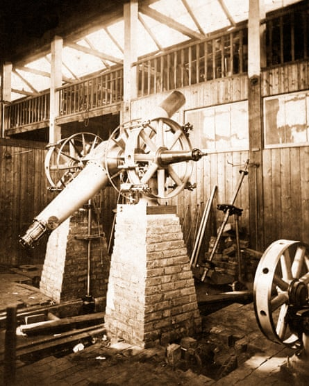
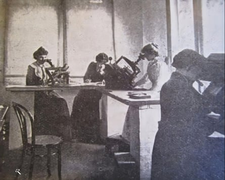

For more than a century, astronomers assumed she had simply “computed” complex calculations for the Victorian men who had exclusive use of Cambridge Observatory telescopes.
But researchers now say that Annie Walker – a Victorian woman who began working at the observatory in 1879, when she was only 15 – actually observed thousands of stars herself.
Previously overlooked evidence indicates Walker was the first British professional female astronomer who was paid a living wage by an observatory in the UK to chart the stars.
But unlike the celebrated German astronomer Caroline Herschel, who was granted a salary by King George III to assist her brother William in his work as the court astronomer a century earlier, Walker’s work as a trailblazing female astronomer has been neglected.
A photograph of Cambridge Observatory’s transit circle telescope, presumably in the workshop of its maker, Thomas Cooke & Son, in York, 1870.Photograph: University of Cambridge, Institute of Astronomy Library
The Institute of Astronomy at the University of Cambridge , which houses its library in the old Cambridge Observatory building, is seeking to put this right.
In April the institute managed to get an asteroid – the AnnieWalker – named after its former employee and now the organisation is launching a campaign to find a photograph of Walker to hang in the institute and be used in articles to reassert her rightful place in the history of science.
“She was a real pioneer for women in astronomy – she literally would have recorded the position of thousands of stars,” said the institute’s spokesperson Mark Hurn, who has been searching for a photograph of Walker in local archives for “20-odd years”.
He is appealing to Guardian readers in the UK and Australia, where Walker died in 1940, for help. “It would make such a tremendous difference to her legacy to have her photograph.”
The daughter of a mill owner, Walker was recruited from her Cambridge boarding school to do routine calculations for astronomers at the observatory. “That was quite common in the 19th century – it wasn’t that unusual for women to do that job. What is unusual is that, in Annie’s case, she became trained to use the telescopes. By the 1890s, she was doing the bulk of the observing at the observatory, while still employed as a computer.”
Hurn speculates that this happened because the eyesight of Walker’s elderly boss, the astronomer Andrew Graham, declined over the 21 years she worked there. “To observe the stars, she would sit at the eyepiece through the course of the night, waiting for them to cross through the field of the telescope’s view, and then she would record the elevation of the telescope and the exact time the star passed.”
These numbers would allow her to calculate an exact position for each star, as part of an international project to chart the galaxy.
When Graham retired aged 88 in 1903, “she expected to get his job, but instead a younger man – who Annie had trained on the telescopes herself – was appointed to the role”.
This was probably due to a change in the leadership of the observatory, Hurn said. “John Couch Adams, who was in favour of women’s education, was replaced by Sir Robert Ball, a conservative who didn’t really approve of women working, particularly in astronomy. Walker’s career was blighted by his prejudice.”
She resigned in 1903 and emigrated to Nyora in Melbourne, Australia, to be with her brother Frank Walker, a butcher. “I think she felt she didn’t have much of a future in Cambridge.”
The measuring bureau at Melbourne Observatory. There is no evidence Walker continued with her astronomy after moving to Australia.Photograph: Courtesy of Dr Toner Stevenson/The Australasian
His living descendants were unable to supply a photograph of her. “They weren’t aware of Annie and her work in astronomy, which is really sad,” said Hurn.
Working with an independent historian, Roger Hutchins, the institute has discovered Walker continued to describe herself as an astronomer on the Australian electoral roll in 1909, “but we’ve contacted all the observatories out there and we’re pretty sure she never worked in an observatory in Australia. We think perhaps she was helping out with her brother’s business,” said Hurn.
Evidence unearthed by Hutchins has revealed that two catalogues of Walker’s work observing the stars were eventually published in the 1920s and “full credit” given to her by the then director of the Cambridge Observatory, Sir Arthur Eddington.
But Hurn thinks Walker probably never knew her contributions to astronomy had been recognised during her lifetime and her status as a pioneer was neglected by previous curators of the observatory’s history. “She was the first professional woman to earn a living from astronomy,” said Hurn. “But if you asked most astronomers today, they wouldn’t know her name.”